Software Engineering
Full-stack applications, backend services, APIs, cloud platforms, databases, integrations, automated testing, and maintainable architecture.

Giofahreza Asady / Technology Portfolio

I build, operate, and improve technology systems across software engineering, AI, business applications, and IT operations.
Recent Work IO Gateway
Across the Technology Lifecycle
More than eight years of experience connecting hands-on implementation with reliable delivery, production operations, and business priorities.
Full-stack applications, backend services, APIs, cloud platforms, databases, integrations, automated testing, and maintainable architecture.
AI auditing, retrieval-augmented systems, video and data analytics, encryption, identity, transaction risk controls, and privacy-aware products.
Business applications, production support, incident resolution, modernization, stakeholder coordination, team guidance, and vendor evaluation.
More Here